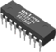

Memory Watcher



Every effort is made to eliminate memory leaks in the ORCA code. However, occasionally some will slip thru. The Memory Watcher is one way to track ORCA’s memory and CPU usage over time. A growing memory footprint would constitute a bug and should be reported as such.How long ORCA has been running
A plot over time of the CPU usage, real memory footprint, and the size of the virtual image